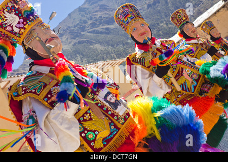

Según Sarmiento de Gamboa, un cronista español del siglo XVI, el emperador inca Pachacútec conquistó y destruyó Ollantaytambo para luego incorporarlo en su imperio. Bajo el gobierno de los incas, el pueblo fue reconstruido con espléndidos edificios y el valle del río Urubamba fue irrigado y provisto de andenes; el pueblo sirvió de albergue para la nobleza inca mientras que los andenes eran trabajados por yanaconas, sirvientes del emperador. Tras la muerte de Pachacútec, la región pasó a la custodia de su panaqa. Durante la conquista, Ollantaytambo funcionó como capital temporal para Manco Inca Yupanqui, líder de la resistencia inca contra los españoles. Bajo su mandato, el pueblo y sus alrededores fueron fortificados en dirección a la antigua capital inca de Cuzco. En 1540, la población nativa de Ollantaytambo fue asignada en encomienda a Hernando Pizarro.
| Fecha | Tipo | Lugar | Festividad | Descripción | Imagen |
|---|---|---|---|---|---|
| 1-Ene | Costumbrista | Plaza de Armas de Ollantaytambo | SINKUY o WATAQALLARI | Es un juego de bolos que se celebra en la tarde del 01 de enero, organizado por los “varayoc” y regidores de las comunidades locales. |

|
| 15-May | Religiosa | Distritos Ollantaytambo | SAN ISIDRO LABRADOR | Se celebra con procesiones, danzas y recorridos con bueyes adornados. |

|
| 31-May | Religiosa | Distrito de Ollantaytambo | FESTIVIDAD DEL SEÑOR DE CHOQUEKILLKA | Con procesiones, comparsas y danzas, reconocida como “Patrimonio Cultural de la Nación”. |  |
| 29-Jun | Evento | Ollantaytambo | OLLANTAYRAYMI | Drama incaico que narra el amor prohibido del general Ollanta y Cusi Coyllor. |

|
Ollantay, un hombre de origen humilde, se enamora perdidamente de Cusi Coyllur, hija del poderoso emperador inca. Su amor es imposible debido a las estrictas reglas de la sociedad inca. Desafiando adversidades, Ollantay decide secuestrar a Cusi Coyllur y llevarla a un lugar remoto en las montañas. Juntos viven su amor en secreto mientras Ollantay lucha por protegerla. La historia se desarrolla con batallas, engaños y momentos de pasión.

Estaba ya próximo el fin del Inca del Imperio y su único hijo se encontraba gravemente enfermo. El pueblo elevaba ruegos a Inti, Mama-Quilla y demás dioses. Los médicos y las súplicas no bastaban, hasta que los Amautas propusieron que el príncipe se bañara en aguas de maravilloso poder que existían en regiones apartadas.
En una mañana de sol, partió del Cuzco una caravana que lo condujo hasta las fuentes del agua salvadora. Durante el viaje, montañas, valles y ríos dejaron al pueblo maravillado ante la grandeza de la naturaleza.